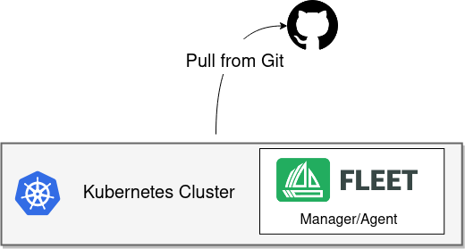

インストール詳細
SUSE® Rancher Prime Continuous Delivery は二つのモードでインストールできます: シングルクラスター と マルチクラスター。
-
シングルクラスターインストール:始めるために推奨されます。このモードでは、Fleet Manager と Fleet agent が同じクラスターで実行されます。
-
マルチクラスターインストール:中央マネージャーから複数のダウンストリームクラスターを管理するために使用されます。

シングルクラスターのセットアップでは、同じクラスターが Fleet Manager と Fleet agent の両方を実行します。 クラスターは直接Gitサーバーに接続して、リソースをローカルにデプロイします。 これは、開発、テスト、小規模な使用に理想的なシンプルで生産サポートされたセットアップです。
前提条件
Helm 3
FleetはHelmチャートとして配布されます。Helm 3はサーバーサイドコンポーネントを持たないクライアント専用CLIです。 Helm 3をインストールするには、 Helmインストールガイドの公式指示に従ってください。
デフォルトのインストール
SUSE® Rancher Prime Continuous Delivery をセットアップするために、以下のHelmチャートをインストールしてください。
|
RancherのSUSE® Rancher Prime Continuous Delivery RancherはSUSE® Rancher Prime Continuous Deliveryのための別々のHelmチャートを含み、異なるリポジトリを使用します。 |
-
Fleet Helmリポジトリを追加する
helm repo add fleet https://rancher.github.io/fleet-helm-charts/ -
Fleet
CustomResourceDefinitionsをインストールするhelm -n cattle-fleet-system install --create-namespace --wait fleet-crd \ fleet/fleet-crd -
Fleetコントローラーをインストールします。
helm -n cattle-fleet-system install --create-namespace --wait fleet \
fleet/fleet
インストール検査
次のコマンドを実行して、SUSE® Rancher Prime Continuous Deliveryコントローラーポッドが実行中であることを確認します:
kubectl -n cattle-fleet-system logs -l app=fleet-controller
kubectl -n cattle-fleet-system get pods -l app=fleet-controller出力の例：
NAME READY STATUS RESTARTS AGE
fleet-controller-64f49d756b-n57wq 1/1 Running 0 3m21sこれで、`fleet-local`ネームスペースにGitリポジトリを登録して、リソースのデプロイを開始できます。
SUSE® Rancher Prime Continuous Deliveryインストールの調整
コントローラーとエージェントのレプリカ
SUSE® Rancher Prime Continuous Delivery v0.13以降、Helmチャートは各コントローラータイプとエージェントのレプリカ数設定を公開します:
-
controller.replicas:バンドル、クラスター、およびグループを管理する`fleet-controller`ポッドを制御します。 -
gitjob.replicas:GitOps `GitRepo`の調整を制御します。 -
helmops.replicas:実験的なHelmOpsコントローラーを制御します。 -
agent.replicas:Fleet agent を制御します。
各々はデフォルトで1つのレプリカになります。
imagescanを有効にする
imagescan機能はデフォルトで無効になっており、つまり:
-
非空の`imageScans`ブロックが`fleet.yaml`または同等の設定ファイルにあると、バンドル作成エラーが発生し、あなたのGitRepoのステータスに表示されます。
-
imagescanコントローラーは実行されず、そのため、`fleet.yaml`または同等の設定ファイル内の`imageScan`ブロックで参照されるリポジトリは新しいイメージの監視を行いません。これは、`image: <image>:<tag> # {"$imagescan": "test-scan"}`のような注釈を持つマニフェスト内で参照されるイメージタグが展開されないことも意味します。
これを解決するために、`--set imagescan.enabled=true`でFleetをインストールしてください。
追加のSSH既知のホスト
SSHを介してgitリポジトリと対話する際、厳格なホストキーのチェックがデフォルトで有効になっており、つまりSUSE® Rancher Prime Continuous Deliveryは`known_hosts`エントリが存在しないホストへのSSH接続試行を拒否します。
詳細については、厳格なホストキーのチェックを参照してください。
デフォルトでは、Fleetは一般的に使用されるいくつかのgitホスティングプロバイダーのために`known_hosts`エントリをインストールします。
設定マップに追加されたホストキーのフィンガープリントは、それぞれ次のように取得されます：
-
GitHub SSHキーのフィンガープリントから取得されます。
-
SSH既知のホストエントリからGitlabのために取得されます。
-
SSHの設定と二段階認証からBitbucketのために取得されます。Bitbucketは、
curl`コマンドを提供しており、`known_hosts`フレンドリーな形式でそれらを取得できます：`curl https://bitbucket.org/site/ssh -
SSHキーを使用して認証するからAzure DevOpsのために取得されます。
ただし、自己または会社がホストするプライベートサーバーなど、異なるgitホスティングセットアップを使用する場合、これらのサーバーのエントリは、additionalKnownHosts Helm値を使用してインストール時にFleetに追加できます。この値は文字列の配列をサポートしています。
その配列の各要素は追加のエントリになります。例えば：
helm -n cattle-fleet-system install --create-namespace --wait fleet fleet/fleet \
--set additionalKnownHosts={'ourgitserver.company ssh-rsa <fingerprint>','our-other-git-server.company ssh-ed25519 <fingerprint2>'}マルチコントローラーのインストール：シャーディング
展開
バージョン0.10以降、SUSE® Rancher Prime Continuous Deliveryは静的シャーディングをサポートします。 各シャードは一意のシャードIDによって定義されます。 オプションで、特定のノードでそのシャードのすべてのコントローラーポッドが実行されるように、 ノードセレクターを割り当てることができます。
次のHelmオプションでSUSE® Rancher Prime Continuous Deliveryをインストールします：
-
--set shards[$index].id=$shard_id -
--set shards[$index].nodeSelector.$key=$value
例:
helm -n cattle-fleet-system install --create-namespace --wait fleet fleet/fleet \
--set shards[0].id=foo \
--set shards[0].nodeSelector."kubernetes\.io/hostname"=k3d-upstream-server-0 \
--set shards[1].id=bar \
--set shards[1].nodeSelector."kubernetes\.io/hostname"=k3d-upstream-server-1 \
--set shards[2].id=baz \
--set shards[2].nodeSelector."kubernetes\.io/hostname"=k3d-upstream-server-2SUSE® Rancher Prime Continuous DeliveryコントローラーとGitJobポッドを確認します：
kubectl -n cattle-fleet-system get pods -l app=fleet-controller \
-o=custom-columns='Name:.metadata.name,Shard-ID:.metadata.labels.fleet\.cattle\.io/shard-id,Node:spec.nodeName'Name Shard-ID Node
fleet-controller-b4c469c85-rj2q8 k3d-upstream-server-2
fleet-controller-shard-bar-5f5999958f-nt4bm bar k3d-upstream-server-1
fleet-controller-shard-baz-75c8587898-2wkk9 baz k3d-upstream-server-2
fleet-controller-shard-foo-55478fb9d8-42q2f foo k3d-upstream-server-0GitJobポッドについても同様です：
kubectl -n cattle-fleet-system get pods -l app=gitjob \
-o=custom-columns='Name:.metadata.name,Shard-ID:.metadata.labels.fleet\.cattle\.io/shard-id,Node:spec.nodeName'機能のしくみ
各Fleetコントローラーは、そのシャードIDでラベル付けされたリソースを処理します。 シャーディングされていないコントローラーは、シャードIDのないすべてのリソースを処理します。
特定のシャードにGitRepoをデプロイするには、リソースにラベル`fleet.cattle.io/shard-ref`を追加します。
例:
apiVersion: fleet.cattle.io/v1alpha1
kind: GitRepo
metadata:
name: sharding-test
labels:
fleet.cattle.io/shard-ref: foo
spec:
repo: https://github.com/rancher/fleet-examples
paths:
- single-cluster/helm既知のシャードID（例えば、foo）を持つGitRepoは、そのコントローラーによって処理されます。
不明なシャードID（例えば、boo）は無視されます。
シャードを追加または削除するには、更新されたシャードリストでSUSE® Rancher Prime Continuous Deliveryを再デプロイしてください。
マルチクラスタの設定
|
Rancherのダウンストリームクラスターは自動的にSUSE® Rancher Prime Continuous Deliveryに登録されます。 以下の設定はスタンドアロンのSUSE® Rancher Prime Continuous Deliveryにのみ適用され、RancherによってQAテストは行われていません。 |
|
インストール手順はシングルクラスターの設定と同じです。 Fleet Managerをインストールした後、リモートクラスターを手動で登録してください。 マネージャーによる登録には、追加のAPIサーバーの詳細が必要です。 それがないと、エージェントによる登録のみが可能です。 |
APIサーバーのURLとCA証明書
FleetマネージャーはKubernetes APIサーバーへのアクセスを必要とします。 エージェントはAPIサーバーのURLとCA証明書を使用して安全に通信します。
これらの値をkubeconfigファイル（$HOME/.kube/config）から取得してください：
apiVersion: v1
clusters:
- cluster:
certificate-authority-data: LS0tLS1CRUdJTi...
server: https://example.com:6443CA証明書を抽出する
`certificate-authority-data`フィールドはBase64エンコードされています。 それをデコードしてファイルに保存してください：
base64 -d encoded-file > ca.pemこのコマンドを使用してすべてのCAを抽出します：
kubectl config view -o json --raw | jq -r '.clusters[].cluster["certificate-authority-data"]' | base64 -d > ca.pemマルチクラスターのkubeconfigの場合：
kubectl config view -o json --raw | jq -r '.clusters[] | select(.name=="CLUSTERNAME").cluster["certificate-authority-data"]' | base64 -d > ca.pemAPIサーバーを抽出する
API_SERVER_URL=$(kubectl config view -o json --raw | jq -r '.clusters[] | select(.name=="CLUSTER").cluster["server"]')
API_SERVER_CA="ca.pem"確認
APIサーバーのURLを確認してください：
curl -fLk "$API_SERVER_URL/version"期待される出力：JSONバージョン情報または`401 Unauthorized`エラーです。
次にCA証明書を検証してください：
curl -fL --cacert "$API_SERVER_CA" "$API_SERVER_URL/version"有効なJSONまたは`401 Unauthorized`メッセージが表示されるはずです。 SSLエラーが発生した場合、CAファイルが正しくありません。
CAファイルの例（ca.pem）：
-----BEGIN CERTIFICATE-----
MIIBVjCB/qADAgECAgEAMAoGCCqGSM49BAMCMCMxITAfBgNVBAMMGGszcy1zZXJ2
ZXItY2FAMTU5ODM5MDQ0NzAeFw0yMDA4MjUyMTIwNDdaFw0zMDA4MjMyMTIwNDda
...
-----END CERTIFICATE-----マルチクラスター用にインストール
APIサーバーのURLが`https://example.com:6443`で、CAが`ca.pem`にあると仮定します。 APIサーバーがよく知られたCAを使用している場合、CAパラメータを省略してください。
API_SERVER_URL="https://example.com:6443"
API_SERVER_CA="ca.pem"次に、Fleetチャートをインストールします：
helm repo add fleet https://rancher.github.io/fleet-helm-charts/CustomResourceDefinitionsをインストールします：
helm -n cattle-fleet-system install --create-namespace --wait \
fleet-crd fleet/fleet-crdFleetコントローラーをインストールします：
helm -n cattle-fleet-system install --create-namespace --wait \
--set apiServerURL="$API_SERVER_URL" \
--set-file apiServerCA="$API_SERVER_CA" \
fleet fleet/fleet[確認]
kubectl -n cattle-fleet-system logs -l app=fleet-controller
kubectl -n cattle-fleet-system get pods -l app=fleet-controllerNAME READY STATUS RESTARTS AGE
fleet-controller-64f49d756b-n57wq 1/1 Running 0 3m21sこの時点で、Fleetマネージャーは準備が整っているはずです。 これでクラスターを登録し、Gitリポジトリを追加できます。